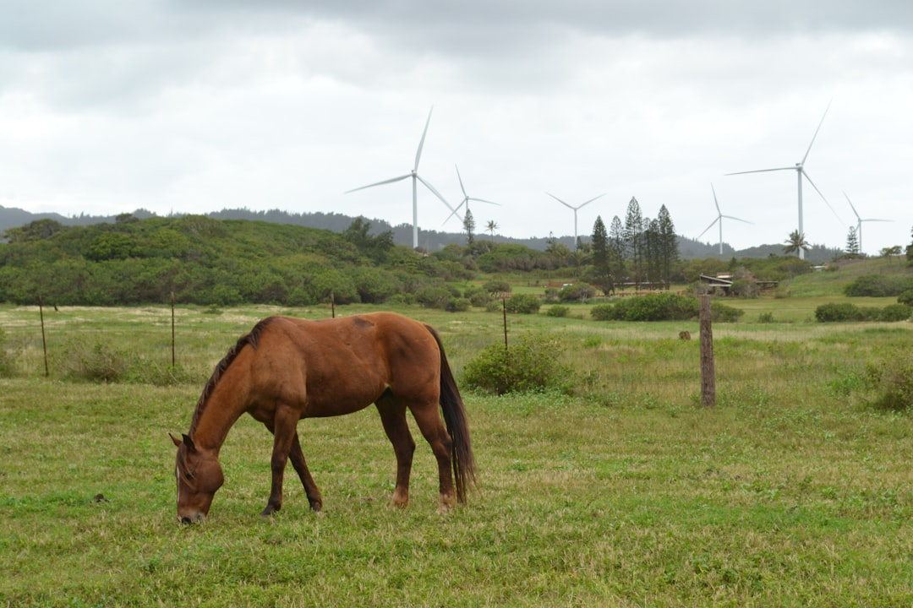

### Telluric Currents: Nature’s Power and Capitalism's Overreach
### Telluric Currents: Nature’s Power and Capitalism's Overreach In the grand scheme of environmental exploitation, telluric currents—those natural, subtle electrical flows found beneath our feet—are often dismissed as mere geological curiosities. Yet, in an age where climate catastrophe looms ever larger, these currents emerge not only as a scientific phenomenon, but as a symbol of the potential power that lies unexploited in our natural world, largely ignored by a capitalist regime that has vested interests in fossil fuels and corporate greed. Telluric currents are the Earth's invitation to humanity—an invitation to reconnect, rediscover, and regenerate. These underground electrical flows operate on a global scale, interacting with the Earth's magnetic field and giving insight into the geophysical processes that govern our planet. Instead of harmonizing with these energies and seeking sustainable practices, capitalist enterprises race to extract and exploit every ounce of fossil fuel and rare minerals instead. This reckless path is not only environmentally catastrophic, it’s also a blatant disregard for the harmonious balance that nature, including these telluric currents, promotes. For centuries, indigenous communities have recognized the importance of harnessing natural forces, practicing a holistic approach toward land and energy. In stark contrast, the exploitative actions of multinational corporations have led to environmental degradation and climate change at an alarming rate. The dawn of the Anthropocene has seen the unyielding advance of capitalist environmental destruction, where telluric currents are buried under layers of extraction and exploitation. Let's break it down. Telluric currents are generated by various natural phenomena, including solar winds, geomagnetic storms, and even the rhythmic ebb and flow of the tides. They can provide insight into our Earth’s geological makeup, social structures, and ecosystems. Yet what do we do? We pave over the Earth, dig it up, and siphon off what’s beneath without acknowledging the energy system that has effortlessly thrived under our feet. In this economic regime, energy sources are largely centralized, owned, and operated by a few gigantic corporations. This monopoly on energy has given rise to massive wealth disparity, where the few flourish while many suffer. Here lies an opportunity! Imagine a world where local communities not only understood telluric currents, but utilized these energies sustainably—encouraging self-sufficiency rather than dependency on corporate giants. Solar panels could coexist with the harnessing of telluric energy, creating an interconnected web of sustainability that pays homage to both nature and the revolutionary potential of the people. But what if we start asking the questions that challenge this capitalist narrative? What if local communities took control of their energy? Engaging with telluric currents can serve as an anchor for localism, a grassroots effort against the sprawling machinery of corporate power. It’s time to disentangle communities from the grasp of fossil fuels and industrial energy monopolies, and instead, collectively explore the available natural electricity flowing through our very Planet. In light of these possibilities, we must challenge the narrative perpetuated by the status quo—the one that insists we rely on centralized, polluting energy sources that benefit the elite. New technologies, combining traditional ecological practices and modern scientific knowledge, could lead to innovative methods of harnessing these telluric currents for the benefit of all rather than the few. The potential applications are vast—energy generation, improvements in agricultural practices, and even in the restoration of ecosystems that have suffered under industrial farming and deforestation. Transforming communities into centers of local energy generation could result in not only economic empowerment but a vital return to communal living and cooperation. The unfortunate truth remains: the capitalist insistence on drilling, extracting, and polluting is turning our planet into a wasteland. The solution lies not in the hands of governments or corporate behemoths but within the spirit of the people. As we face existential crises driven by climate change and loss of biodiversity, communities must look to the ground beneath us and realize that we have a power source that is not only renewable but also a testament to the Earth’s mysteries. The call to action is clear. We must awaken to the hidden forces like telluric currents that lie within our grasp. Harnessing these energies could push us towards a truly sustainable future—one that champions the rights of all life over the insatiable greed of a few.
Updated 2025-08-03 07:26 UTC